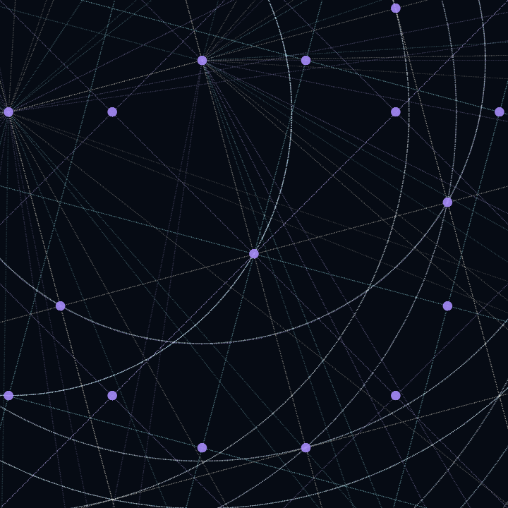
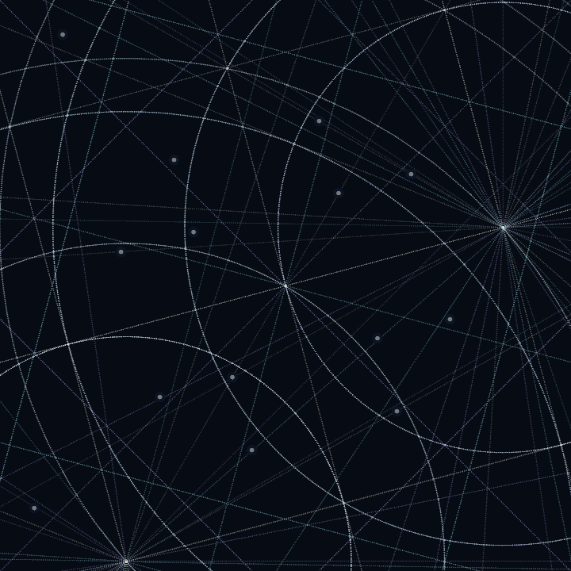
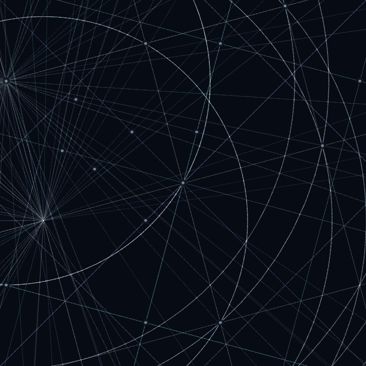
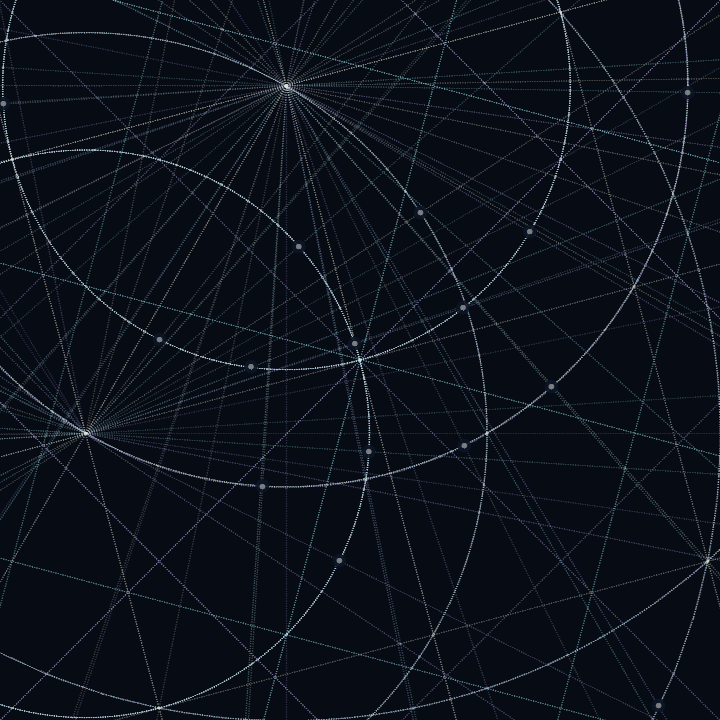

Preview — a sibling series to Seeded Geometries.
Concentric ring lattices welded to the square grid, drawn in stippled bone linework
on abyssal ground. 150 tokens · 0.001 ETH · 10% royalties.
01Locked geometry

Two centers, nine rings. Ring foci sit exactly on square-grid
vertices; every ring/spoke/grid joint is a single fused vertex. Layers at
75° / 105° / 135°, 1.578× zoom, expanding-ring wave on an
8-second loop with 2 seconds of exact rest.
02Dot grid — byte 5

Triangle40 — favored
Accent dots on module third-points, in the triangulated language of v1.

Square35
Accent dots on the linear grid's square intersections — the original placement.

Circle25
Accent dots on ring/spoke crossings of the ring lattice.